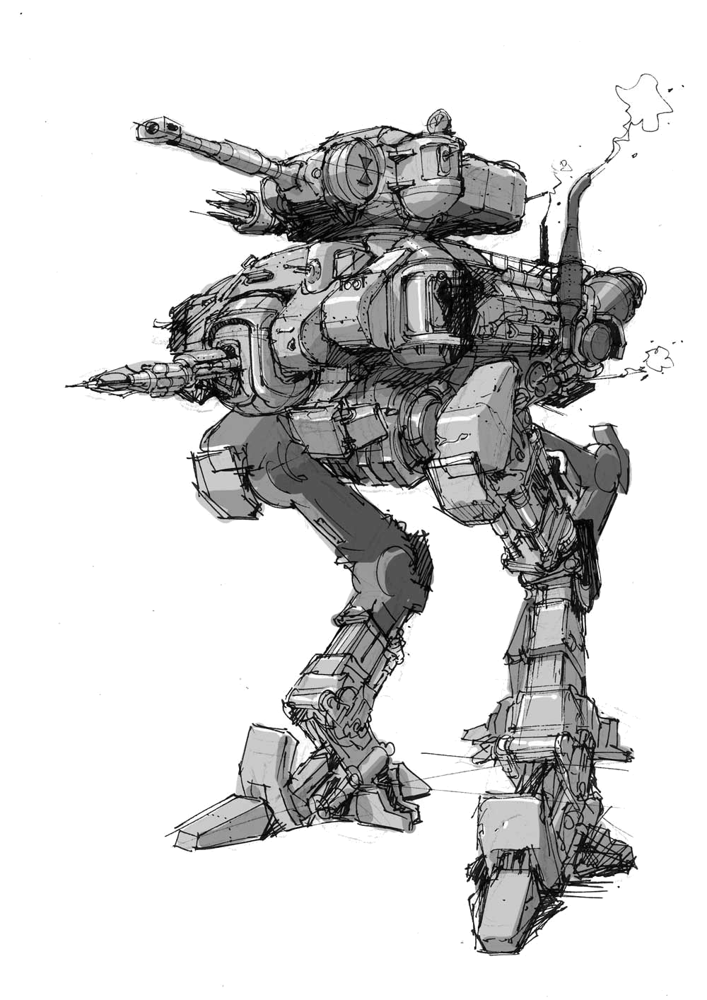
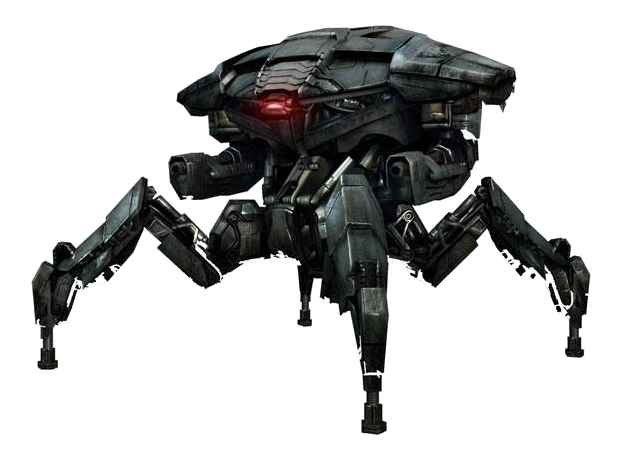
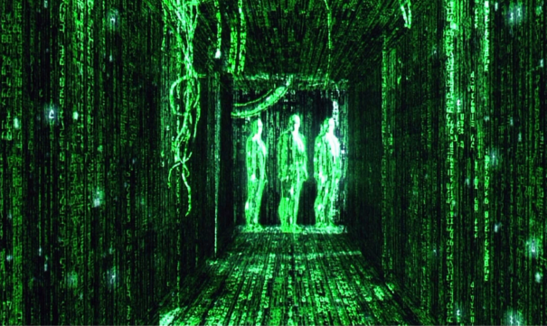

Dans quelle mesure l'intelligence artificielle est-elle un danger pour l'espèce humaine ?
Citations
Stephen Hawking :
« The development of full artificial intelligence could spell the end of the human race. -
2014
Elon Musk :
« We need to be super careful with AI. Potentially more dangerous than nukes. -
2014
Vernor Vinge :
« Within thirty years, we will have the technological means to create superhuman intelligence. Shortly after, the human era will be ended. -
1993
Tout d'abord, commençons par définir l'
intelligence artificielle (IA). Cette tâche n'est pas aisée car des dizaines de définitions différentes peuvent être trouvées. La revue
La Recherche décrit l'IA comme la
« recherche de moyens susceptibles de doter les systèmes informatiques de capacités intellectuelles comparables à celle des êtres humains ».
L'IA est de plus en plus présente autour de nous. Ce phénomène devrait de s'accentuer puisque des projets de plus en plus ambitieux sont menés, comme par exemple celui de simuler le fonctionnement d'un cerveau humain (
Human Brain Project). Ces projets futuristes osés, ainsi que l'évolution très rapide qu'a connu l'intelligence artificielle et les nouvelles technologies ces dernières décennies, remettent en question la
sécurité de l'homme face aux machines. Plusieurs théories pessimistes à notre sujet sont de ce fait évoquées. Certaines sont à prendre plus ou moins avec sérieux. Nous allons, dans cette étude, nous pencher sur ce danger potentiel qu'est l'IA.
Signes actuels
Aujourd'hui, l'intelligence artificielle n'est incontestablement pas capable de porter un préjudice important à l'espèce humaine. Cependant, plusieurs indicateurs montrent que la puissance de l'IA n'a de cesse de grimper et que notre avenir peut être vu d'un oeil pessimiste. Pour examiner ces facteurs, décomposons les en trois catégories: le support matériel des IA, leur puissance, et enfin les armes pouvant nous mettre en danger physiquement.
Loi de Moore
En 1975, Gordon E.Moore a prédit que le nombre de transistors des microprocesseurs doublerait tous les deux ans. Cette loi apporte un support matériel propice au développement d'intelligences artificielles.
Citation - Moore
« The complexity for minimum component costs has increased at a rate of roughly a factor of two per year. - 1965
« The new slope might approximate a doubling every two years. - 1975
Notons tout d'abord qu'il existe plusieurs lois considérées, souvent abusivement, comme loi de Moore.Dès lors que "quelque chose" double tous les ans ou tous les deux ans, on parle régulièrement de loi de Moore. Gordon E.Moore n'a cependant émis que deux prédictions très précises que l'on peut qualifier de loi de Moore. Celles-ci prédisent l'évolution du nombre de transistors dans un composant électronique, au cours du temps. Il est important de noter que ces lois ne sont en réalité que des lois empiriques. On ne peut donc pas utiliser ces résultats sans précautions. Voici donc les lois de Moore:
La première formulation de cette loi a été exprimée dans
Electronics Magazine en 1965 dans l'article
Cramming more components onto integrated circuits 1. Elle stipule que
le nombre de transistors dans les circuits intégrés doublera chaque année, tout en restant au prix le plus bas. Pour conjecturer cela, Moore se fonde sur l'évolution de cette technologie de 1959 jusqu'en 1965. Il affirme aussi que cette loi restera valable pendant au moins 10 ans. Cette évolution exponentielle fut rapidement nommée
Loi de Moore.
Cette prédiction, pourtant osée, s'est révélée approximativement juste jusqu'en 1975. Certaines contraintes techniques s'ajoutant à l'augmentation de la puissance des micro-contrôleurs, Moore a revu sa courbe de tendance dans un communiqué
2 (
Progress In Digital Integrated Electronics). Il prédit alors que la pente devrait diminuer pour atteindre un
doublement du nombre de transistors par puce électronique tous les deux ans vers 1980. C'est généralement cette seconde loi de Moore dont on se souvient aujourd'hui car c'est celle qui a été vérifiée le plus longtemps. Cette évolution fulgurante a effectivement bien eu lieu puisque cette loi a été étonnamment bien
respectés pendant 40 ans environ (cf figure ci-contre).
Remarquons l'
étroit lien entre la puissance de calcul et la complexité des IA développées. Cela peut paraître évident, mais cette relation est importante car une puissance de calcul énorme peut mener à une IA très intelligente. Penchons nous sur le domaine des jeux, où l'on remarque une grande évolution. En 1952,
Arthur Samuel créé une IA qui joue aux
dames. Ce jeu a été choisi car il est simple, et les possibilités peu nombreuses. Cependant, les connaissances en algorithmie ne manquaient pas puisque cet IA utilisait par exemple l'
élagage alpha-bêta et évoluait en apprenant. Son intelligence était donc limitée par la puissance de calcul de l'époque. En 1997, les IA s'attaquent aux
échecs avec
Deep Blue développé par IBM. Cette année-là, la machine a battu aux échecs G.Kasparov, le champion du monde du moment. La même année, le programme
Logistello a écrasé le champion du monde d'
Othello, Takeshi Murakami. IBM n'en reste pas là et produit en 2011
Watson, une IA qui a
battu les champions Rutter et Jennings au jeu télévisé Jeopardy!. Cette machine traite une quantité énorme de données pour trouver la réponse à la question. Une puissance de calcul gigantesque est nécessaire et le développement des micro-contrôleurs a grandement contribué à cette prouesse. Le domaine des jeux illustre bien le lien fort entre la puissance de calcul et celui des IA. D'autres exemples peuvent aisément être trouvés sur cette
frise chronologique qui montre l'évolution des IA dans le temps.
Ray Kurzweil, le futurologue de Google, a énoncé une nouvelle loi qui prolonge celle de Moore. Selon lui et les
transumanistes, les prédictions faites par Moore au sujet des semi-conducteurs vont également s'appliquer aux sciences du cerveau, aux nanotechnologies, au séquençage et la manipulation de l’ADN, ... Cette prédiction rapproche dangereusement l'homme des machines.
Nous pouvons supposer que la puissance des micro-contrôleurs continuera à augmenter exponentiellement pendant encore quelques années ou décennies. Cette puissance de calcul en permanente augmentation pourrait permettre bientôt de traiter un nombre gigantesque de données. Les IA nécessitant beaucoup de ressources pourraient alors être dotés de capacités stupéfiantes. Par exemple, les IA travaillant sur le
Big Data (exemple : Deep Blue), le
Machine learning, ou le
Deep learning pourraient réaliser des traitements des données en temps réel. Pour conclure, on peut dire que cet indicateur permet de mesurer grossièrement la puissance de calcul des micro-contrôleurs et indirectement celle des IA. Aussi, l'
évolution indiquée semble être
très rapide et laisse apercevoir un
énorme potentiel.
Intelligence artificielle
Depuis le milieu du XXème siècle, l'intelligence artificielle n'a cessé de progresser en dépassant l'homme dans plusieurs domaines. Voici le détail de cette évolution dans certains domaines.
Le déroulement de ce test est simple.
Un humain engage la conversation avec, séparément, un autre humain et un ordinateur.
Si cet humain n'arrive pas à dire lequel de ses deux interlocuteur est l'ordinateur, la machine à réussi le test.
On peut alors dire que l'ordinateur est doté d'une certaine intelligence.
Ce test est basé sur la parole mais il existe d'autre tests, comme le
captcha, qui permet de différencier très efficacement un humain d'une machine (malgré quelques
défaillances).
L'intelligence artificielle a évolué très rapidement en même temps que le développement de l'informatique. Nous venons de voir un exemple de cette formidable évolution dans le domaine des jeux. Ce secteur est très intéressant et illustratif mais ne comporte aucun danger;
battre l'homme à un jeu n'est aucunement menaçant. Mais beaucoup de recherches sont menées au sujet du langage naturel, de l'apprentissage ou de la vie artificielle
3, ce qui peut être plus préoccupant. Certaines avancées pourraient contribuer à la création de robots trop intelligents pour l'homme, éventuellement dangereux.
Les premières recherches sur le
traitement du langage naturel datent du XVII
ème siècle avec les travaux de
Descartes ou Leibniz mais restèrent théoriques. En 1950 apparurent les travaux de Alan Turing dans son fameux article
Computing Machinery and Intelligence 4qui détaille le
test de Turing. Les premiers programmes de traitement du langage furent développés dans les années 1960 avec les projets
STUDENT et
ELIZA en 1964 ou
SHRDLU en 1970. Ces programmes n'étaient cependant pas très complexes, ils se basaient sur la méthode des
blocks world. Leur compréhension étant très limitée, les éventuelles discussions deviennent vite ennuyeuses. L'apparition des réseaux de transition augmenté (
ATM) en théorie des graphes à permis la création de meilleurs
chatterbots comme
PARRY (1972), qui simule un schizophrène paranoïaque. C'est, au passage, la première IA a avoir passé le test de Turing, même si simuler un malade mental est plus simple que converser intelligemment. A la fin des années 1980 apparaît le
machine learning, ce qui révolutionne le domaine puisque les informations sont acquises par l'IA et non plus nécessairement implémentés par les programmeurs. Cette nouvelle technique nécessite une grande puissance de calcul, rendue possible par le développement des micro-processeurs. De nouveaux chatterbot furent développés comme
Racter en 1983 ou
Jabberwacky en 1982 puis
Cleverbot, son évolution, en 2006. Ces IA sont cependant encore
trop peu développées pour construire un dialogue cohérent. Elles sont par exemple incapables de se souvenir d'éléments des questions précédentes, ce qui rend le dialogue peu intéressant. Grâce aux perfectionnement des dernières techniques et au Big data, de nouvelles IA plus intelligentes sont aujourd'hui accessibles. Les dialogues sont plus réfléchis mais manquent encore cruellement de sens. On peut citer
Mitsuku ou
Skynet-AI qui sont relativement doués.
On remarque une évolution dans la compréhension du langage humain par les machines mais celles-ci sont encore incapable de tenir une conversation intelligente.
Le test de Turing est encore un cap à franchir. Cependant, il est facile d'imaginer que d'ici peu, des IA pourraient tromper l'homme. Effectivement, on peut dire que comprendre le langage est acquis.
Watson nous a montré qu'y répondre était faisable, il ne manque donc qu'à construire une discussion intelligente. Ce n'est pas une tâche aisée mais elle est atteignable. Dans ce cas où l'homme pourrait être trompé par une machine, elles auraient acquis un avantage considérable;
l'homme serait facilement dupé et incapable de croire en ses semblables sans un contact visuel ou auditif.
Le traitement du langage naturel permet d'illustrer l'évolution les techniques utilisées en IA jusqu'à maintenant, mais utilisons le
domaine de la vie artificielle pour détailler les dernières techniques. Cette discipline est vaste, et plusieurs définitions peuvent s'appliquer à elle, mais les termes "vie artificielle" sont plutôt évocateurs. Les techniques de
neural network (
réseau de neurones) et de
deep learning sont très utilisés dans ce domaine. On peut voir le
réseau de neurones comme une inter-connexion d'un grand nombre de neurones. Chaque neurone est une fonction qui, à partir de paramètres donné par les neurones connectés en entrée, renvoie 1 ou 0 à tous les neurones qui sont connectés en sortie. Chaque paramètre est pondéré par un coefficient. Il est possible de modifier les pondérations et certains paramètres au sein des fonctions, ce qui permet de faire évoluer le réseau de neurones. Cette modélisation est très proche de celle d'un cerveau humain. Le
deep learning utilise un réseau de neurones particulier car les neurones sont agencés en couches, avec une couche bas niveau interagissant avec l'entrée (pixels d'une image, mots d'une phrase, ...) et une couche de haut niveau donnant un résultat (c'est le visage de Sara, la phrase est agressive, ...). Leur utilisation est relativement complexe mais très
interessante comme l'implémentation en
algorithmes génétiques complexes.
Ces modèles sont très puissants et permettent à une IA de résoudre des problèmes complexes sans l'intervention nécessaire de l'homme, en apprenant seule, à partir d'une information simple comme une image (
exemple).
On arrive à voir ici les capacités des algorithmes les plus puissants existant aujourd'hui. Toutes ces capacités commencent à nous faire douter de l'incapacité des machines à surpasser l'homme. Aujourd'hui, ces programmes sont très contrôlés et ne permettent pas de toute manière de prendre le contrôle, mais ceci pourrait devenir envisageable dans un futur proche.
Armée de robots
Pour porter un préjudice physique à l'homme, une structure matérielle doit être mise en place. Les combats de science fiction entre les robots et l'homme pourraient ainsi devenir réalité. Il existe déjà des entreprises spécialisées dans le développement de robots à usage militaire.

La recherche actuelle s'intéresse beaucoup à l'intelligence artificielle et à la robotique, qui se développent très vite. Ces progrès permettent de voir apparaître des robots
humanoïdes comme
NAO,
ASIMO ou
PETMAN (militaire). Ces robots effectuent des tâches relativement simples comme
marcher, prendre et tenir des objets, mais aussi plus complexes comme
reconnaître une personne ou parler. Notons les capacités déjà poussées de ces robots, qui intéressent aussi l'armée. Ces
robots militaires peuvent être rangés dans
trois catégories.
La première catégorie est le
soutien aux soldats sur le terrain. Les fantassins ont besoin avec eux de munitions, de vivres et de divers équipements lourds. L'entreprise
Boston Dynamics à, pour cet effet, produit le robot
Big Dog. Il permet de suivre un soldat sur tous types de terrains inaccessibles aux véhicules (en pente, enneigé ou caillouteux), tout en portant plus de 150kg de chargement. Il à déjà été utilisé en Afghanistan par l'armée américaine en 2009
5. Autrement, il existes plusieurs petits robots pilotés à distance qui permettent diverses opérations comme le déminage (
PackBot utilisé par l'armée américaine) ou la reconnaissance (
Recon scout).
Une deuxième catégorie de
robots oeuvre sur le terrain. Leur objectif est très différent, bien plus
offensif. Il n'existe pas encore de robot terrestre autonome capable de tuer. En revanche, le
Kuratas, développé par
Suidobashi Heavy Industry, par exemple, est très puissant et peu être contrôlé facilement à distance. Il est extrêmement bien armé et permet plusieurs fonctionnalités comme le verrouillage de cible. Notons qu'il est pionner dans le monde des
mecha et que des évolutions plus ambitieuses pourraient voir le jour dans les décennies à venir. Il existe aussi des petits robots offensifs rapidement déployables, par exemple les robots
SWORDS, armés de mitrailleuses lourdes, permettant d'
éliminer des cibles.
Enfin, la dernière catégorie est le
soutien aérien piloté à distance. On y retrouve principalement les drones. Ils permettent d'effectuer des actions militaires rapidement, sans envoyer de soldats sur le terrain. Ces avantages majeurs les rendent de plus en plus utilisés sur les théâtres de guerres. Aujourd'hui, les plus utilisés et les plus connus sont les
Predators de
General Atomics qui ont été employés en Irak et en Afghanistan.

Nous pouvons supposer qu'au delà de ces projets publiques, l'
armée mène des travaux secrets dans ce domaine.
General Atomics Aeronautical Systems,
Boston Dynamics et
Suidobashi Heavy Industry sont étroitement liés à la recherche militaire mais sont des compagnies privées. Elles ne sont pas directement liées à l'armée. De plus, certains projets militaires sont restés longtemps cachés aux yeux de tous. Tel le projet
Northrop B-2 Spirit, dont les détails étaient même tenus ultra-secrets au sein de l'armée. Il s'agit d'un avion bombardier furtif, développé dans les années 1970, qui fut utilisé pendant plusieurs guerres. Il n'est donc pas impossible que l'armée garde une certaine avance dans le domaine des hautes technologies.
On peut penser que ces robots continueront à se développer et à devenir de plus en plus sophistiqués. Et, si l'intelligence artificielle évolue de la même façon, les robots pourraient devenir aussi
autonomes que dans le film
Chappie. L'aide humaine, déjà limitée, pourrait être complètement abandonnée. A défaut d'être autonome, une IA suffisamment développée pourrait se charger de leur contrôle. On aurrait alors affaire à une armée de robots controllés par une IA, dont la puissance serait à craindre. Les armées humaines ne feraient probablement pas le poids et
une guerre opposant humains et machines pourrait se produire.
En restant réaliste, ce scénario n'est pas envisageable sans une IA très développée. On ne peut pas pour l'instant affirmer qu'une telle IA existera un jour. Les robots doivent pouvoir être complètement commandés par une IA, mais l'homme n'a aucune raison de construire de telles machines. Effectivement, le danger est trop élevé et les décisions doivent être prises par les généraux et non par un algorithme autonome. Il est inutile qu'une décision soit prise par un robot donc cette fonctionnalité ne sera pas implémentée.
Théories pessimistes
Il existe un bon nombre de théories plus ou moins pessimistes vis à vis du futur entre les IA et l'homme. Certaines sont peu effrayantes comme celles prévoyant un attachement de l'homme aux robot au détriment des autres humains (lien). La théorie à propos du Trading Haute Fréquence qui prévoit un emballement des algorithmes de trading suivie d'une crise économique très importante, n'affecterait personne physiquement. D'autres sont plus spectaculaires mais néanmoins à ne pas prendre à la légère, d'autant que la puissance des IA pourrait évoluer rapidement. Voici le détail de plusieurs théories de nature très différentes.
Vers un monde instable
Un monde instable est ici un monde dans lequel l'homme est en contact quasi permanent avec l'intelligence artificielle et où cette intelligence est menaçante. Par menaçante, j'entends techniquement capable de mettre en danger l'homme et suffisamment proche pour en avoir l'occasion.
Pour porter préjudice à l'homme, une IA peut attaquer volontairement, en détruisant notre cerveau à la place d'une banale chirurgie laser des yeux par exemple, ou involontairement, en perdant tout contrôle d'une centrale nucléaire. Ces exemples ne devraient a priori jamais se réaliser, car les
algorithmes déterministes utilisés ne sont pas dangereux du fait de leur manque d'intelligence. De plus, les secteurs sensibles comportant des
systèmes critiques utilisent des algorithmes adéquates limitant la propagation des problèmes. Cependant, l'
invasion de la robotique et le développement de l'IA pourraient faire apparaître ce danger. Les IA se rapprochant de plus en plus de l'homme, des scénarios similaires aux précédents pourraient devenir envisageables. Les homicides volontaires ou non dus à des robots pourraient se multiplier.
Pour effectuer une attaque, les IA doivent avoir les
moyens techniques pour nous mettre en danger. De telles machines pouvant devenir des menaces n'existent pas encore mais elles pourraient voir le jour dans un futur proche. En médecine par exemple, les IA ont fait leur entrée dans les hopitaux, le robot
Da Vinci de
Intuitive Surgical qui, supervisé par un médecin, opère des patients. Cette machine est potentiellement dangereuse mais ne possède pas l'
intelligence nécessaire pour le devenir. Elle est dépendante de son superviseur et n'effectue aucune tâche nécessitant une prise de décision. Dans le domaine des jeux vidéos aussi, l'IA se rapproche de l'homme;
EPOC d'
Emotiv permet d'exploiter l'
électroencéphalographie pour communiquer avec son ordinateur. Il permet de reconnaître les expressions du visage, les émotions et les pensées conscientes (
détails). Malgré l'inoffensivité totale de cet appareil, on peut imaginer dans le futur des systèmes plus intrusifs comme le
nerve gear dans
SAO (Sword Art Online,
amine japonais) qui contrôle totalement sur le cerveau du porteur. Un autre exemple de système d'appareil très intrusif est également représenté dans
Milhana (Saga MP3). Da Vinci et EPOC sont des exemples concrets qui montrent d'une part la
dangerosité, et d'autre part l'
intelligence de systèmes en proximité avec l'homme. Ces systèmes pourraient devenir potentiellement dangereux si leurs compétences devenaient communes.
Le cloud computing (ou l'
informatique dématérialisée) est l'exploitation de données et services distants par l'intermédiaire d'un réseau; internet.
Les ressources mises à disposition sont accessibles dès lors qu'on est connecté au réseau et qu'on possède les droits d'accès.
Le cloud computing est un paradigme important car il favorise le partage à grande échelle.
Parallèlement à l'apparition de machines directement dangereuses pour l'homme, d'autres scénarios peuvent être imaginés. De plus en plus de tâches sont automatisées et cette délégation semble progresser en s'étendant à tous les domaines. Les algorithmes mis en jeu sont de plus en plus complexes comme celui développé pour la génération de carte pour
StarCraft utilisant un algorithme génétique. Cette complexité croissante amène les algorithmes à devenir très connectés avec l'extérieur, en utilisant le Big Data par exemple. La
SNCF nous le montre en déployant le Big Data pour optimiser les flux de voyageurs. L'automatisation semble progresser en devenant plus intelligente et plus connectée. Ce développement peut mener à un monde instable pour deux raisons. Premièrement,
la forte connexion rend les systèmes peu protégés très vulnérables, et
augmente l'impact potentiel d'une attaque. Et
la complexité des algorithmes mis en oeuvre
rend cette catastrophe plus probable. Un logiciel malveillant, en infiltrant ce type d'algorithmes pourrait en prendre le contrôle en faisant muter l'algorithme initial. Une perte de contrôle serait possible, qui aurait de lourdes conséquences, telles des accidents
optimisés. Ce type de scénario est très bien illustré dans
Summer Wars, un film d'animation de Mamoru Hosoda imaginant l'impact dévastateur d'un système mal-intentionné infiltrant un réseau sensible.
L'augmentation très rapide du nombre de tâches automatisées dans plusieurs domaines laisse imaginer un contact quasi permanent entre les différents objets connectés qui pulluleraient demain. L'implémentation d'algorithmes non déterministes de plus en plus complexes rendront le comportement de ces systèmes instable. Leur danger sera accentué par les connexions toujours plus fortes et nombreuses entre les entités de notre monde. De plus, la forte proximité avec l'homme de machines potentiellement dangereuses renforcera la menace. La protection des systèmes critiques sera alors primordiale.
Singularité future
La singularité évoquée ici est la singularité technologique, celle qui pourrait mener soudainement à un surpassement de l'espèce humaine par la machine, en réalisant au passage des IA bien plus intelligentes que l'homme. L'apparition de cette évolution fulgurante engendrerait une menace évidente pour l'homme.
Le Basilik de Roko est une théorie émise par Roko via un
post sur le forum LessWrong. Il s'agit plus d'une expérience de pensée qu'une théorie réaliste mais elle a entraîné beaucoup de réactions. Cependant, une singularité technologique augmente fortement la probabilité de réalisation de cette IA.
Roko proposa que dans le cas ou il existerait une IA toute puissante, celle-ci pourrait décider de punir rétroactivement toutes les personnes qui étaient au courant de sa future existence, et qui n'ont malgré tout, pas contribué à son développement.
Pour plus de détails, je vous conseille l'excellente vidéo de
DirtyBiology.
Vous, lecteur, êtes désormais au courant de l'existence de cette IA. Pour éviter toute vengeance, attelez vous au développement de cette IA, si vous y croyez...
Avant toutes choses, définissons la
singularité technologique. Il s'agit bien évidemment d'une singularité appliquée à la technologie. La singularité peut cependant être définie de différentes manières selon le domaine d'utilisation. La singularité des mathématiques ou celle du transhumanisme n'ont pas la même signification. Ici, on retiendra la définition émise par Vernor Vinge dans son ouvrage
The Coming Technological Singularity 6.
La singularité technologique y
est définie comme
un concept selon lequel les technologies connaîtraient une évolution fulgurante, ce qui influerait drastiquement notre civilisation. On peut la voir comme
une période future au cours de laquelle le rythme du changement technologique sera tellement rapide, son impact si important, que la vie humaine en sera transformée de façon irréversible 7.
Un cyborg est un être humain qui a reçu des greffes mécaniques. On peut vulgairement dire qu'il s'agit d'un mélange entre un humain et un robot.
On peut en retrouver dans
Ghost in the Shell.
Attention à ne pas confondre robot, cyborg et androïde. Un robot est une entité mécatronique artificielle autonome. Un cyborg combine des composants artificiels et biologiques. Un androïde est un robot
humanoïde.
Il faut noter que la singularité technologique peut se traduire principalement par
le dépassement ou la transcendance de l'homme. Ici, nous parlerons de dépassement car, malgré l'incertitude du monde qu'apporterait une transcendance, il n'est pas spécialement à craindre. Effectivement, même si l'amélioration de l'homme par la technologie peut devenir dangereuse, il est peu probable que le danger menace toute l'espèce humaine. Voici quelques illustrations cinématographiques pour comprendre facilement la différence entre ces deux types d'amélioration. Dans les films
I, Robot,
The Terminator,
Summer Wars,
The Matrix ou
Blade Runner, le dépassement est illustré car, dans ces films, les robots prennent le dessus sur l'homme sans que celui-ci n'évolue physiquement. Dans
Gost in the Shell,
Total Recall,
Transcendance ou
RobotCop, c'est l'homme qui est modifié par la technologie, l'homme et la machine se lient. On a affaire à une transcendance de l'homme.
Tous ces films, et principalement les premiers, montrent les craintes faces aux IA. Bien que ces scénarios catastrophes appartiennent à la science fiction, ils pourraient devenir réalité à cause de cette singularité. Elon Musk, PDG de SpaceX, explique avec humour que « s'il y a quelques super-intelligence numérique, et que son optimisation de la fonction d'utilité est nuisible à l'humanité, elle aura un très mauvais effet.[...] Il pourrait se dire, "La meilleure façon de se débarrasser du spam est de se débarrasser de l'homme." » Ce scénario ridicule souligne qu'une IA puissante peut facilement devenir dangereuse pour l'homme.
La singularité technologique est souvent vue d'un regard pessimiste car elle permettra aux machines de surpasser l'homme. Des scénarios catastrophes sont imaginés dans
Matrix ou dans
Terminator. Il est à souligner que
cette singularité peut, dans le cas d'une transcendance de l'homme, être très positive de plusieurs points de vues. Ray Kurzweil, directeur de l'ingénierie chez Google, prévoit que
les nanorobots vont largement intégrer notre corps, notre cerveau et notre environnement, la pollution et la pauvreté seront vaincues, notre longévité sera drastiquement augmentée, des réalités virtuelles sollicitant tous nos sens seront crées (comme dans
SAO)
, nous pourrons assister à des expériences fabuleuses comme dans Dans la peau de John Malkovich, et l'intelligence humaine sera grandement améliorée 8, 9. Mieux, Laurent Alexandre, thuriféraire de Google, annonce que
« l'homme pourrait devenir immortel à brève échéance » dans une
conférence TEDx.
Tout comme lorsqu'on parle du futur lointain, il est
difficile d'être légitime lorsque l'on parle du monde post-singularité, puisque trop de changements apparaîtront rapidement. Les prévisions de Ray Kurzweil et de Laurent Alexandre sont donc à prendre avec précautions. Mais les prévisions des futurologues et les tendances actuelles permettent de se faire une certaine idée du futur proche. Ray Kurzweil a annoncé l'an dernier ses
prédictions jusqu'en 2099. Il prévoit la singularité technologique pour 2045.
Pour conclure, la singularité technologique est une évolution extrêmement rapide dans le domaine des technologies et des
NBIC. Elle pourrait permettre
l'apparition d'IA dépassant de loin l'homme, ou d'hommes améliorés: des cyborgs. Bon nombre de théories et
scénarios de science fiction pourrait ainsi se réaliser. Cette singularité pourrait avoir des influences très positives sur l'homme ou, au contraire, dévastatrices, seul l'avenir nous permettra de le savoir. Les plus optimistes prévoyant cet événement pour 2045, les plus jeunes pourront peut-être y assister.
Trop tard
Et si la singularité technologique avait déjà eu lieu ? Nous pourrions dans ce cas vivre actuellement dans une simulation informatique, comme dans Matrix ! Mais cette supposition n'est même pas nécessaire. Sans elle, il reste très probable que nous soyons dans une simulation.
Citation - Elon Musk
« Hope we're not just the biological boot loader for digital superintelligence. Unfortunately, that is increasingly probable. -
2014
Vous avez probablement souris en découvrant cette théorie absurde à premier abord. Elle pourrait avoir été énoncée par des fans de Matrix, mais il n'en est rien. Au moins deux arguments permettent de supposer que nous vivons dans une simulation informatique. L'un est d'ordre scientifique, l'autre d'ordre principalement philosophique. Il peut paraître improbable que cette thèse ait un appui scentifique, mais entrez-y sans a prioris négatifs.
Certaines informations de notre monde suggèreraient que nous vivons dans une simulation informatique.'est ce que des scientifiques comme Silas Beana ont exposé dans un
article du magazine
Discover. Selon cet article,
les discontinuités de certaines grandeurs, comme les niveaux d'énergie,
décèlent certaines limites de notre monde. Pourquoi de telles limites ? Parce qu'une simulation informatique ne traite ni avec la continuité, ni avec l'infini. L'article montre comment discerner si nous sommes ou non dans une simulation. Il faut pour cela trouver des
glitchs, présents dans toutes les simulations. Si certaines grandeurs supposées statiques, comme la vitesse de la lumière ou la
constante de structure fine, se mettaient à varier, on aurait mis en évidence un glitch. Malheureusement, aucun
glitch n'a encore été découvert. Cette théorie peut sembler admettre un problème notable. Il est vrai que, ces arguments sont valables uniquement si on suppose que la simulation dans laquelle nous sommes est semblable aux simulations de notre monde. Il n'y a pourtant,
a priori, aucune raison à cela. C'est ici qu'intervient Nick Bostrom.

Nick Bostrom est un philosophe contemporain. Il a publié un
article montrant qu'il est
très probable que nous vivions dans une simulation informatique. Il affirme aussi que si nous vivons effectivement dans une simulation,
il est extrêmement probable qu'elle soit effectuée par une civilisation semblable à la nôtre. Selon lui, l'une de ces trois affirmations est correcte:
1 - Aucune civilisation ne pourra atteindre un niveau technologique incluant la faculté de créer une réalité simulée.
2 - Aucune civilisation atteignant le stade technologique sus-cité, ne produira cette réalité simulée, soit par nécessité de réserver sa puissance de calcul à d'autres tâches, soit par considérations éthiques, etc.
3 - Nous sommes dans une simulation informatique.
10
Les détails des démonstrations ne seront pas étudiés ici mais figurent dans l'article. Supposons donc qu'au moins une des trois assertions est exacte. En supposant qu'il sera possible dans un futur relativement proche de créer nous même une simulation, ce qui est très probable, la première affirmation peut être éliminée. La deuxième affirmation renforce la théorie de Silas Beane, qui reste tout de même peu solide. Il en résulte que la thèse selon laquelle nous vivons dans un monde simulé n'est pas absurde.
Cette théorie extravagante souligne que toutes les spéculations précédentes sont à voir d'un oeil critique, malgré un appui scientifique souvent avancé. Cependant, cette dernière est tout de même à considérer, elle offre une expérience de pensée intéressante. Pour finir, même sans être dans une simulation informatique, il est également possible, dans le cas où une singularité technologique ait déjà eu lieu, qu'une IA ai pris le contrôle sur l'humanité, comme dans l'anime
Psycho Pass. Cette dernière idée est malheureusement trop délirante pour être traitée avec sérieux.
Pour conclure, on peut affirmer que l'intelligence artificielle est un danger potentiel pour l'espèce humaine, comme l'ont déjà prévenus Stephen Hawking, Elon Musk ou Vernor Vinge. Ce danger n'est pas simplement le fruit de l'imagination venant de geeks fans de Terminator. Il est à prendre avec sérieux. Plusieurs théories plausibles offrent une triste vision de l'avenir de l'homme. Certaines, plus osées, s'attaquent au présent.
Il est cependant à noter que beaucoup d'arguments s'attaquent à ces théories. Plusieurs articles parlent par exemple de fin de la loi de Moore (
lien [The Economist],
lien [IEEE Spectrum]). D'autres affirment qu'une singularité technologique n'arrivera jamais (
lien), ou que les IA resteront inoffensifs. Les
lois d'Asimov, qui assurent la sécurité de l'homme si ses lois sont respectées, vont dans ce sens. Pedro Domingos affirme dans son oeuvre
The Master Algorithm 11 qu'un algorithme, même le plus puissant algorithme d’apprentissage imaginable, ne déviera pas de sa fonction: effectuer un calcul d'optimisation en fonctions de paramètres donnés (
lien à ce sujet). Il y a donc nombre de raisons de rester critique sur ce sujet, et assez d'arguments encourageants pour rester serein.
Cependant, dans son livre
La physique de l'impossible 12, Michio Kaku expose plusieurs cas dans lesquels des prédictions supposées absurdes (même scientifiquement impossibles) se sont réalisés. Lord Kelvin déclara ainsi utopique tous les dispositifs qui, comme les avions, seraient plus lourd que l'air. Michio Kaku cite sir
Wiliam Osler: « Les philosophies d'une époque sont devenues les aberrations de la suivante, et les bêtises d'hier la sagesse de demain ». Selon Michio, « L'impossible est relatif ». De quoi redonner des couleurs à nos fans de
Matrix.
SOURCES
- (en) Gordon E. Moore, Cramming More Components Onto Integrated Circuits, Electronics, vol. 38, 19 avril 1965 (lien [PDF])
- (en) Gordon E. Moore, Progress In Digital Integrated Electronics, Transcription du discours de Moore au International Electron Devices Meeting, 1975 (lien [PDF])
- (fr) David Medernach, Xil'Cast, Vie Artificielle, 2014 (lien [web])
- (en) Alan M. Turing, Computing Machinery and Intelligence, Mind, Vol. 59, No. 236, pp. 433-460, 1950 (lien [PDF])
- (en) Marc Raibert, Kevin Blankespoor, Gabriel Nelson, Rob Playter and the BigDog Team, BigDog, the Rough-Terrain Quaduped Robot, 2008 (lien [PDF])
- (en) Vernor Vinge, The Coming Technological Singularity: How to Survive in the Post-Human Era, article pour le projet VISION-21, 1993 (lien [PDF])
- (fr) Jean Philippe Bocquenet, La Singularité technologique, essai [25/01/2016]
- (en) Ray Kurzweil, Singularity Q&A, essai [21/02/2016]
- (en) Ray Kurzweil, 2006, The Singularity Is Near: When Humans Transcend Biology, Penguin Books, 672 p.
- (en) Nick Bostrom, 2003, Are You Living in a Simulation?, Philosophical Quarterly (2003), Vol. 53, No. 211, pp. 243-255. (lien [PDF])
- (en) Pedro Domingos, 2015, The Master Algorithm: How the Quest for the Ultimate Learning Machine Will Remake Our World, Basic Civitas Books, 352 p.
- (fr) Michio Kaku, 2011, La physique de l'impossible, Seuil, 280 p.
{kind=link}
{kind=link}